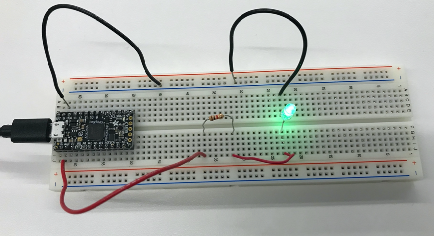

Week 1: Introduction & Documentation
Before Thursday, I'd never made a breadboard or worked with circuits. It was exciting to assemble the simple circuit and experiment with the multimeter.
After sucessfully lighting the led, I wondered if the resistor was directional. In order to test this, I measured the voltage across the resistor twice, once with it in both orientations.


As is shown in the above photos, the voltage across the resistor is almost exactly the same regardless of orientation, suggesting that the resistor is not directional.
After connecting the circuit to the 5V USB output which fed the resistor/LED unattenuated current directly from the battery, the led was substantially brighter, though I failed to photograph it.
While I attemped to run the Blink program, I struggled to give the Arduino permission to access the port on my laptop. However, I had just updated to the new Mac OS and had been suffering from a series of permissions errors which I have now resolved. I'm curious to see if I can sucessfully get my computer and the Arduino running now!